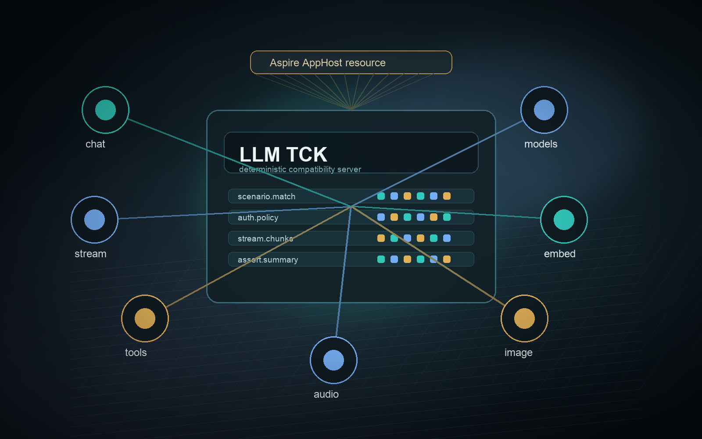

Chat
Script exact responses, failures, and queued replies.
ManagedCode.LlmTck
Host a local provider-compatible server with Aspire, script exact model behavior, and call it through HTTP or Microsoft.Extensions.AI.

Coverage
Script exact responses, failures, and queued replies.
Emit known SSE chunks and a deterministic done marker.
Expose a local catalog for chat, embeddings, image, and audio.
Inspect matched, unmatched, auth, exhausted, and error events.
Return configured vectors for repeatable semantic tests.
Serve fixed image and audio fixtures without external calls.
Packages
Core runtime, OpenAI wire mapping, ASP.NET Core endpoints, Microsoft.Extensions.AI clients, and Aspire AppHost extensions ship as separate packages.
Start
builder
.AddLlmTck("llm-tck", "../ManagedCode.LlmTck.Service/ManagedCode.LlmTck.Service.csproj")
.WithOpenAICompatibility()
.WithApiKey("test-key");